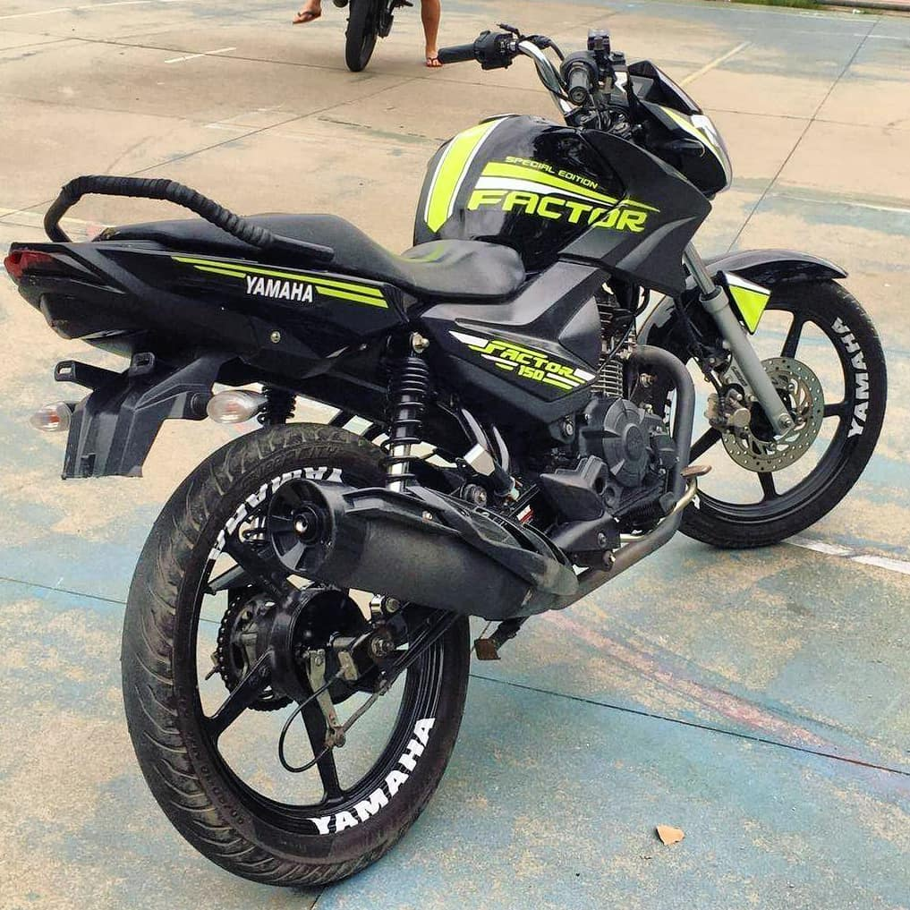

Gol Quadrado
História: Gol Quadrado
O Gol Quadrado foi a segunda geração do modelo Gol, produzido pela Volkswagen no Brasil entre 1981 e 1994. Com um design mais reto e robusto, ficou popular pela sua durabilidade, baixo custo de manutenção e versatilidade. O modelo foi um grande sucesso, especialmente com o motor 1.6, e até hoje é lembrado como um clássico, sendo querido por muitos entusiastas e colecionadores.

Astra
História: Astra
O Chevrolet Astra foi produzido no Brasil entre 1998 e 2011, se destacando como um dos carros médios mais populares da marca. Lançado para substituir o Chevrolet Kadett, o Astra trouxe um design mais moderno e recursos avançados para a época. Disponível em versões hatch e sedan, o modelo se destacou pela segurança, conforto e desempenho, conquistando uma base fiel de fãs. Ao longo dos anos, passou por atualizações, mas manteve-se como um dos preferidos entre os brasileiros até o fim de sua produção.
Passat CC
História: Passat CC
O Volkswagen Passat CC foi lançado no Brasil em 2008, combinando elegância, desempenho e sofisticação. Derivado da tradicional linha Passat, o CC (Comfort Coupé) trazia um design de quatro portas com perfil de coupé, oferecendo um visual mais esportivo e luxuoso. O modelo se destacou por seu interior refinado, tecnologia de ponta e motorizações potentes. A combinação de conforto e estilo fez do Passat CC um carro desejado, embora tenha sido descontinuado no Brasil em 2016, deixando uma marca como um dos sedãs mais elegantes de sua época.

Mitsubishi Lancer Evolution
História: Mitsubishi Lancer Evolution
O Mitsubishi Lancer Evolution, ou Lancer Evo, foi lançado em 1992 como um modelo de alto desempenho baseado no sedã Lancer. Desenvolvido principalmente para competições de rally, o Evo rapidamente se tornou um ícone entre os fãs de carros esportivos, com sua tração integral (AWD), motor turboalimentado e tecnologias avançadas para a época. Ao longo de 10 gerações, o Evo foi aprimorado com mais potência, agilidade e inovações, tornando-se um dos carros mais respeitados e desejados do mundo. Sua produção foi encerrada em 2016, mas o legado do Lancer Evo continua vivo, especialmente entre entusiastas e colecionadores de carros esportivos.
BMW M3
História: BMW M3
O BMW M3 foi lançado em 1985 como uma versão de alto desempenho do BMW Série 3. Desenvolvido pela divisão esportiva M da marca, o M3 rapidamente se tornou um ícone, combinando potência, agilidade e precisão. Ao longo das gerações, o M3 foi aprimorado, com motores mais potentes, tecnologia de ponta e um design cada vez mais agressivo. Conhecido por seu desempenho em pista e sua versatilidade para o dia a dia, o M3 é considerado um dos melhores carros esportivos do mundo. Sua produção continua até hoje, com o M3 se mantendo uma referência de esportividade e excelência automotiva.
Factor 150
História: Factor 150
A Factor 150 é uma empresa brasileira fundada em 2010, especializada em soluções de tecnologia para gestão empresarial, focando em segurança da informação, automação e inteligência de negócios. Ela oferece ferramentas personalizadas para otimizar processos e melhorar a performance das empresas.
Honda XRE 300
História: XRE 300
A XRE 300 é uma motocicleta trail da Honda, lançada no Brasil em 2008. Com um motor de 291 cc, ela é conhecida por sua robustez e versatilidade, sendo ideal tanto para o uso urbano quanto para aventuras off-road. A XRE 300 possui um design que combina conforto e funcionalidade, com uma posição de pilotagem ereta e um tanque de combustível de grande capacidade, permitindo longas distâncias sem a necessidade de reabastecimento frequente. É uma escolha popular entre os motociclistas que buscam uma moto confiável para diferentes tipos de terreno.
Yamaha XJ6
História: XJ6
A Yamaha XJ6 é uma motocicleta naked que combina estilo e desempenho, lançada em 2009. Com um motor de 600 cc, a XJ6 é projetada para ser acessível tanto para motociclistas iniciantes quanto para experientes. Seu design moderno e agressivo, aliado a uma posição de pilotagem confortável, a torna ideal para o uso urbano e passeios. A XJ6 é conhecida por sua agilidade e facilidade de manobra, além de oferecer uma experiência de pilotagem divertida e envolvente.
Yamaha XT660
História: XT660
A Yamaha XT660 é uma motocicleta dual-sport que combina características de motos de estrada e off-road. Lançada em 2004, ela é equipada com um motor monocilíndrico de 660 cc, oferecendo um bom equilíbrio entre potência e eficiência. A XT660 é conhecida por sua durabilidade e capacidade de enfrentar terrenos difíceis, tornando-a uma escolha popular entre os aventureiros. Seu design robusto e a suspensão de longo curso proporcionam conforto e estabilidade em diversas condições de pilotagem.
Honda Repsol 1000
História: Repsol 1000
A Repsol 1000 é uma versão especial da Honda CBR1000RR, que homenageia a equipe de corrida da Repsol Honda. Lançada em 2014, essa moto é equipada com um motor de 999 cc e é projetada para oferecer desempenho excepcional em pista. A Repsol 1000 se destaca pelo seu design inspirado nas motos de corrida, com uma pintura vibrante e detalhes que refletem a herança da marca nas competições. É uma moto que combina tecnologia avançada, como controle de tração e freios ABS, com um estilo esportivo marcante.
Triumph Tiger 1200
História: Tiger 1200
A Triumph Tiger 1200 é uma motocicleta adventure touring, conhecida por sua capacidade de enfrentar longas distâncias com conforto e estilo. Lançada em 2012, a Tiger 1200 é equipada com um motor de 1215 cc, oferecendo potência e torque adequados para viagens em estrada e off-road. Seu design ergonômico, juntamente com recursos como controle de tração, modos de pilotagem e um sistema de suspensão ajustável, a torna uma escolha popular entre os motociclistas que buscam aventura e conforto em suas jornadas.
Kawasaki H2R
História: H2R
A Kawasaki H2R é uma super esportiva de alto desempenho, lançada em 2015. Com um motor sobrealimentado de 998 cc, a H2R é uma das motos mais potentes do mundo, capaz de atingir mais de 300 km/h. Projetada exclusivamente para uso em pista, ela apresenta um design aerodinâmico e agressivo, com tecnologia avançada, como controle de tração e modos de pilotagem. A H2R é um verdadeiro ícone de engenharia, representando o que há de mais moderno em termos de performance e inovação no segmento de motocicletas.